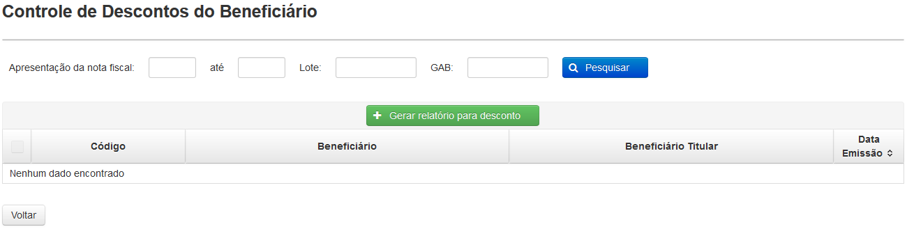

Ao clicar nesta opção é exibida a tela 'Relatórios para Desconto de Beneficiário' que mostra uma lista com os relatórios de desconto gerados.

Tela 'Relatórios para Desconto de Beneficiário'
Para criar um novo relatório, o usuário deve clicar em().

Nenhum dos filtros é obrigatório para a pesquisa mas o usuário pode usá-los para resultados mais específicos.
Após selecionar os resultados o usuário deve clicar em() para gerar o relatório.
Para visualizar os detalhes de um relatório criado deve-se clicar no ícone().